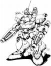

Forums galactiques > Taverne galactique : lieu de discussion informel > le Ring
| Horohoro Réputation à la taverne : 1130  08/12 ETU 13:56 | Score : 0 Détails HRP:Jonas je viens de te fracasser le crâne tu devrais être K.O.^^
Luciole dégaina l'un de ses sabres,Entenka (sous le soleil flamboyant). La lame se couvrit de flammes ardentes,prêtes à brûler tout ce qui passe. Il lança une vague de flammes sur Razorkilll,en un simple mouvement du poignet. "Empire Incandescent!!" | ||
| Lord Jonas 1er Réputation à la taverne : -1  08/12 ETU 13:57 | Score : 0 Détails Merci Syl.
Aprè un bref instant Jonas avait denouveau ses deux bras. p.s Pouvez ne plus me trancher mes bras merci. | ||
| syl10 Réputation à la taverne : 102  08/12 ETU 14:00 | Score : 0 Détails Maintenant qui attaque qui?
Lord========>mp | ||
| Lord Jonas 1er Réputation à la taverne : -1 08/12 ETU 14:00 | Score : 0 Détails HRP: à cause de mes blessures, le haut de mon crane est en métal. Je suis toujours en état de combatre bien que ne peut plus utiliser mes attaque Psycique. ( je n ai pas pu tuer Razorkill a cause de ça.)
| ||
| Lord Gui Réputation à la taverne : 1  08/12 ETU 14:02 | Score : 0 Détails Lord Gui se battait avec acharnement contre Necormanger...celui ci lui fit tombée son épée...il s'arrêtèrent de combattre...
Tu es fais, dit Necormanger...Il leva son sabre...Lord Gui sauta, repris son épée et contra l'attaque. son escorte entra dans la pièce et lui tirèrent dessus. Necromanger dévia les tires.. | ||
| Necromanger Réputation à la taverne : 121  08/12 ETU 20:58 | Score : 1 Détails Necromanger était dans un tel état de rage, que les douleurs qu'il ressentait devenaient légère, il para les attaques de Lord Gui, avec son sabre laser, et profita de l'agitation pour se retirer dans un coin du Ring
Il respirait très vite, et marmonnait des phrases, dans un langage incompréhensible. Il devait le faire, il savait que cela allait être difficile, mais autant supporter cette douleur que de supporter une défaite. Il enleva donc le bandeau qui couvrait son oeil. Ce dernier était fermé. Il attacha le bout de tissu sur sa main gauche, laquelle avait subit de multiples fractures, et il serra, serra très fort. la douleur était à la fois terrible, et un fort soulagement. Puis, il prit une grande inspiration, et ouvrit son oeil: Un puissant rayon laser en sortit, ce fut quelque chose de terrible. Le rayon se dirigea sur Lord Gui, qui cherchait le pirate. Il le percuta de plein fouet, et le projetta sur un bloc de pierre, tel la charge de 100 taureaux. Il ferma son oeil, le rayon disparu aussi vite qu'il était apparu. il découpa dans sa veste un bout de tissu et s'en servit pour remplacer son ancien bandeau. Il souffla, et reprit ses esprits. Le Ring était envahit par une poussière d'une densité extrême. Les cris des combattants lui parvenaient encore, il avançait prudemment, tenant son sabre laser... C'était le chao total... | ||
| faust VIII Réputation à la taverne : 218  08/12 ETU 21:05 | Score : 0 Détails faust s'approcha du ring et cria
"le prochain passant qui en a assez de vivre est pour moi" puis il s'assit dans l'herbe et regarda le combat | ||
| Horohoro Réputation à la taverne : 1130 09/12 ETU 11:29 | Score : 0 Détails Luciole sortit de la poussière générée par le combat,
tel un démon qui sort de sa boite. Le sourire aux lèvres,il balança une boule de feu sur Faust,qui se jeta dans le puits pour "s'éteindre". | ||
| faust VIII Réputation à la taverne : 218 09/12 ETU 11:37 | Score : 0 Détails pendant que faust s'éteignait dans un *puit* un éclair vint s'écraser sur luciole
faust remonta...luciole avait les cheveux electrifiés et les vetements noircis...il ne put s'empècher de rigoler "c'est donc encore toi mon adversaire... l'armée des morts" des squellettes sortaient maintenant du sol et entourait luciole "A L'ATTAQUE" | ||
| Horohoro Réputation à la taverne : 1130 09/12 ETU 11:46 | Score : 0 Détails "Chinseirekka Suiseisho!! Comètes de feu!!"
Une vingtaine de météorites s'abattirent sur les squelettes, brisant les os dans un bruit de fracas monumental. "Ben...? Y sont pas solides tes squelettes..." Luciole fit un pas léger vers Faust... On l'entendit murmurer "Shunpo" dans un souffle... En une fraction de seconde,il se retrouva en face de son adversaire. "Katon!! Gôkakyû no jutsu!! Technique de la Boule de Feu Suprême!!" | ||
| faust VIII Réputation à la taverne : 218 09/12 ETU 11:54 | Score : 1 Détails "pouvoir élémental de l'eau"
une sphère aquatique sortit de la main de faust contrant ainsi son attaque "et ton feu n'est pas très chaud pouvoir élémentaire de la terre...rockprison" les pieds de luciole s'était enfoncer dans le sol et il ne pouvait maintenant plus bouger "lame de vent des lames de vent filèrent sur luciole... | ||
| Horohoro Réputation à la taverne : 1130 09/12 ETU 12:16 | Score : 0 Détails "TENSA ZANGETSU!!*"
Un nuage de fumée se propagea au moment de l'impact... Mais Luciole n'avait pas été touché. Il se tenait quelques mètres plus loin,un katana totalement noir en main. Il portait également un long manteau,noir lui aussi,abimé de part en part,qui flottait au vent. "Getsuga Tenshô!!" | ||
| Lord Jonas 1er Réputation à la taverne : -1 09/12 ETU 13:49 | Score : 0 Détails Jonas était détruit. La blessure au crane infligé par Luciole avait fait tombé Jonas dans l inconcience. Il se réveilla et sortit de la salle en douce. Il avait pas envie qu on le tue
| ||
| faust VIII Réputation à la taverne : 218 09/12 ETU 14:11 | Score : 0 Détails faust fit des mouvement de bras que seul un oeuil auguisé pourrait distingué
après quelques secondes une épée apparut dans sa main droite "TAKE OVER...celle qui absorbent l'énergie" l'arme était écarlate et était forger dans un materiaux connu seul des élément master il ne semblait pas y avoir de séparation entre la garde et la lame faust attaqua...leur deux lames s'entrechoquèrent | ||
| Horohoro Réputation à la taverne : 1130 09/12 ETU 14:15 | Score : 0 Détails Luciole enchaîna les parades et les coups d'estoc,mais ses coups ne portaient pas.
Il rangea alors son sabre,et le manteau disparut lui aussi. Le shinobi se mit en garde,dans une position spécifique. Il ferma les yeux,et respira un grand coup. Lorsqu'il ouvrit les paupières,ses iris étaient devenus entièrement blancs... Byakugan. "Allez,amène-toi!!" | ||
| faust VIII Réputation à la taverne : 218 09/12 ETU 14:23 | Score : 0 Détails faust rangea son arme lui aussi
les courrants d'air se rassemblèrent autour de lui puis ses pieds décolèrent de quelques centimètre il attaqua avec une vitese surprenante...faust apparut devant luciole et lui donna un coup dans l'estomac puis a la jambes gauches le combat faisait rage on aurait dit qu'il était exéco mais les coup de luciole pourtant pas très puissant épuisait faust qui du reculer "c'est quoi cette technique...? dit il en haletant | ||
| Horohoro Réputation à la taverne : 1130 09/12 ETU 14:40 | Score : 0 Détails Les mouvements de Luciole étaient fluides,tel un cours d'eau.
"Grâce au Byakugan,je vois tes Tenketsu. Les Tenketsu sont les points essentiels de la circulation d'énergie dans tout le corps. Avec le Jûken,le Poing Souple,je peux frapper tes Tenketsu avec précision,et ainsi bloquer la circulation de ton énergie. Actuellement,une dizaines de points sont déjà fermés." | ||
| olbi the retour Réputation à la taverne : 17 09/12 ETU 14:48 | Score : 0 Détails Olbi attendès avec impatiente le moment il pouras metre en pratique ses techniques genchutsu, ninjutsu pour montré commentil métrise son chacra.
| ||
| faust VIII Réputation à la taverne : 218 09/12 ETU 15:20 | Score : 0 Détails "dans ce cas...pas le choix"
faust sortit take over et après une courte incantation la planta dans le sol jusqu'a la moitié de la lame "enrgie de la terre sort de l'ombre vient a ton mètre et rejoint son pouvoir" une aura blanche entourait maintenant faust qui ressortit son épée du sol et la rangea dans son fourreau "on peut recommencer maintenat que j'ai récupéré ce ce qui m'avait été enlevé" il tendit ses bras verx l'avant d'ou en sortirent de la main gauche un éclair et de la droite une boule de feu | ||
| Necromanger Réputation à la taverne : 121 09/12 ETU 15:23 | Score : 1 Détails Necromanger profita de l'agitation pour se faufiler derrière un bloc de pierre.
Il chercha un instant, puis commença à remuer la terre: "Allez!!, Mais où est-c'qu'elles sont?!! Allez...!trouvé!!! Ahh!!!!" Il sortit du trou quelques grenades à fragmentation. Il les avait cacher au tout début, avant de combattre. Il observa la porte de la taverne, il avait besoin de soin avant de reprendre le combat. Il prit une longue inspiration sortit de sa cachette, courant droit vers la porte. En chemin, il jeta une grenade, ce qui ébranla quelque peu le terrain. Il atteignit la porte, et l'ouvrit. Il sortit du Ring, et se téléporta dans son vaisseau afin de bénéficier de quelques soins. Il avait également hâte de retourner se battre, car tel un bon vieux pirate, il n'abandonnerait jamais le navire. |
Forums galactiques > Taverne galactique : lieu de discussion informel > le Ring